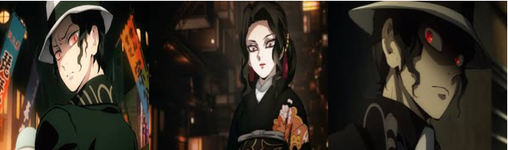

Bonjour et bienvenus sur cette page ! Ici, vous trouverez toutes sortes d'informations sur Muzan Kibutsuji, l'antagoniste principale de Demon Slayer. En espérant que les informations ci-dessous vous seront utile, nous vous laissons désormais à la découvertes de cette page !
Qui est Muzan Kibutsuji ?
Muzan Kibutsuji est un démon, le premier de son espèce, l'ancêtre de nombreux autres démons, et le principal antagoniste du Kimetsu no Yaiba. Il est également le démon responsable de l’assassinat de la plus part des membres de la famille Kamado et de la transformation de Nezuko Kamado en démon.
Apparence
Muzan ressemble à un homme d'une vingtaine d'années avec une peau anormalement pâle avec des cheveux noirs bouclés et des yeux en forme d'amande. Ses pupilles sont verticales, comme des yeux de chat, et de couleur prune rouge. Il possède également des ongles pointus et bleus sur ses mains.
Lors de sa première apparition, Muzan portait un fedora blanc avec un ruban noir et une tenue quelque peu extravagante. La tenue composée en un smoking noir brodé et une cravate blanche sur une chemise de ville noire et un pantalon de costume blanc. Il portait également des mocassins noirs.
Comme on le voit dans les flashbacks de Rui de sa rencontre avec Muzan, le roi démon arborait une coiffure et une tenue légèrement différente dans le passé que lors de sa première apparition. Quand il a rencontré Rui, les cheveux de Muzan étaient plus droits. Il portait également un smoking ample et une demi-cape blanche par-dessus.
Muzan a la capacité de changer son apparence et sa forme. Lors de sa rencontre avec les rangs inférieurs, il est arrivé déguisé en une femme élégante portant un long yukata noir, ce qui a fait que les rangs inférieurs ne l'ont pas reconnu initialement. Plus tard, il s'est transformé en sa dernière identité de couverture, le fils maladif adopté d'un vieux couple prenant la forme d'un jeune enfant âgé de 10 à 11 ans avec une peau pâle et des cheveux noirs, soyeux, lisses et soigneusement peignés. Sa tenue principale dans ce déguisement est une chemise boutonnée unie blanche et un short cargo noir avec des chaussettes longues et des mocassins.
Après avoir neutralisé le poison de Tamayo et émergé de son cocon de chair, les cheveux de Muzan s'allongent et deviennent blancs en raison du poison de Shinobu accélérant son âge. Il fait également pousser de nombreuses bouches sur ses membres, chacune bordée d'un ensemble de crocs incroyablement pointus, qu'il peut utiliser en attaque et à des fins de régénération. Sa peau semble également avoir une masse rouge foncée croissant à partir des extrémités de ses membres et s'étalant sur son corps.
Il est plus tard révélé que Muzan a un éventail de cicatrices sur tout son corps, des blessures infligées lors de sa première bataille contre Yoriichi, qu'il a été brûlé jusqu'au niveau cellulaire et ces blessures ne fut jamais complètement guéries malgré des centaines d'années. Elles ne sont pas visibles mais se révèlent à mesure qu'il s'affaiblit.
Au cours de sa lutte finale et comme moyen pour ralentir les effets du soleil, Muzan adopte une forme de bébé démoniaque élargie, environ aussi haute qu'un immeuble de 3 étages lorsqu'il se lève. Sous cette forme, il a des vaisseaux sanguins très prononcés à travers son corps, de petites griffes et des dents crochues.
Personnalité
Muzan est impitoyable et exceptionnellement intelligent. Il ne voit aucune valeur dans les humains qu'il a rencontrés et montre peu de valeur dans ses propres subordonnés. Rarement bouleversé ou heureux visuellement, il semble complètement monotone et détaché dans la plupart des cas, même lorsqu'il assassine cruellement ses propres subordonnés. Les seules fois où il montre de l'émotion, c'est quand sa vision de la perfection avance ou quand ses subordonnés se soumettent complètement à sa volonté. Le manga le montre plus expressif, en particulier lorsqu'il est enragé et que ses traits du visage sont exagérés pour le démontrer en tant que tel (peut-être comme un moyen d'afficher ses émotions normalement illisibles). Dans l'anime, ses expressions changent légèrement et son ton de voix a tendance à être cohérent à presque tout moment, accentuant son attitude détachée.
Le trait le plus important que Muzan possède est le narcissisme extrême et l'obsession de devenir l'être parfait. Comme il a eu près de 1000 ans à vivre et à observer, avec à peine de vrais défis, son égocentrisme extrême est presque attendu. Il ne considère quasiment rien comme sa préoccupation, sauf surmonter son incapacité à marcher au soleil, qui est sa principale motivation. Sa longue vie et ses obsessions l'ont amené à vouloir que chaque plan qu'il concocte soit absolument parfait, et son complexe divin l'empêche de voir ses propres échecs. Sa conviction qu'il est la chose la plus proche d'un être parfait l'amène à avoir une tolérance zéro pour tout échec, punissant brutalement ceux qui lui échouent ou ceux qu'il considère faibles, même si les échecs sont mineurs.
Son ego gonflé et son sens illusoire d'estime de soi sont si grands qu'il ne peut supporter d'être ridiculisé ou corrigé de quelque façon que ce soit, croyant que les autres n'existent que pour le servir. Cela signifie également qu'il prend rarement au sérieux un adversaire ou une menace. Il a brutalement tué deux hommes ivres simplement pour avoir été impoli avec lui, et tué leur compagne alors qu'elle n'avait rien fait, tout en proclamant sa propre perfection et supériorité sur eux. Cet événement laisse entendre que Muzan a des souvenirs désagréables de son passé humain plus faible et qu'il est très conscient de son apparence anormalement maladive, immédiatement après avec un long déni qu'il est en mauvaise santé, malade et encore moins au bord de la mort. Selon toute vraisemblance, un rappel amer qu'il est toujours imparfait. Quand il a finalement réussi à affronter Kagaya Ubuyashiki, l'homme a répondu à Muzan sur un ton de pitié et de tristesse pour la vie qu'il avait menée. Dans l'esprit de Muzan, cela n'était enregistré que comme des insultes et des menaces, qu'il utilisait pour justifier sa haine pour l'humanité et les tueurs de démons.
De plus, son sens délirant de la toute-puissance est tel qu'il se compare aux catastrophes naturelles, à savoir quelque chose qui est bien au-delà de ce à quoi les humains peuvent se comparer et lutter. En conséquence, il pense que les tueurs de démons sont un groupe de déviants qui ne peuvent pas accepter l'ordre naturel des choses et reprendre leur vie comme normale lorsque d'autres personnes avancent simplement à la suite d'une tragédie. Son analogie témoigne de son incapacité totale à ressentir de la sympathie ou des remords pour ses actes, étant donné qu'aucun des meurtres qu'il ait jamais commis (directement ou indirectement) n'était le résultat d'un accident mais d'actes de pur mal soigneusement orchestrés.
Il s'est montré assez manipulateur et rusé, capable de se fondre normalement dans la société humaine, même d'avoir une famille à ajouter. Une longue vie et une pratique continue lui ont permis d'assumer de nombreux rôles dans la société et de les jouer avec compétence, y compris les enfants et les femmes s'il le souhaite. Cette vie lui a également donné une grande intelligence et une capacité à penser tactiquement. Muzan est un penseur rapide et un stratège capable de gérer rapidement et assez bien les situations défavorables, même si cela peut aussi être dû au fait que la perte de ses subordonnés ne lui signifie rien à long terme.
En raison de sa supériorité perçue et de sa nature à double face, il se sent peu attaché à ses hommes de main, les utilisant et les jetant comme un pion jetable quand bon lui semble. Il ne permet pas à ses subordonnés de remettre en question sa volonté, adoptant régulièrement des représailles brutales s'ils le faisaient. Beaucoup de ses subordonnés, à leur tour, ont profondément peur de lui et mesurent soigneusement leurs paroles et leurs pensées de peur de dire quoi que ce soit qui lui déplaise. Il est capable d'influencer de nombreux démons à ses côtés avec des promesses de pouvoir, de vengeance et de grandeur, tant qu'ils le servent. Son intelligence et sa manipulation brillent ici car beaucoup trouvent les promesses assez attrayantes, car il rencontre beaucoup de ses subordonnés à leur point le plus bas, alors que leurs émotions lui sont faciles à nourrir. Hélas, toutes ces promesses sont finalement fausses, étant donné que Muzan ne se soucie que de lui-même et n'a aucun scrupule à tuer ses propres hommes pour protéger sa propre sécurité.
Lorsqu'elle ne se cache pas derrière une façade, sa pure méchanceté et son intention violente débordante sont si incroyablement malignes qu'elles peuvent être perçues par les autres. Plus particulièrement, Yoriichi Tsugikuni l'a décrit comme étant comme du magma bouillant sortant d'un volcan prêt à tout consommer.
Au-delà de son comportement égocentrique, il y a un sentiment d'auto-préservation qui peut facilement l'emporter sur sa mégalomanie, maudissant paranoïquement ses subordonnés d'une manière terrifiante afin qu'aucun d'eux ne puisse tout autant prononcer son nom, ou être tué instantanément d'une manière morbide cruelle. Lorsqu'il est poussé dans un coin, la position généralement calme, arrogante et supérieure de Muzan s'effondre, ouvrant la voie à la panique et à la peur de prendre racine alors qu'il se bat désespérément pour sa vie, adoptant des mesures plus drastiques pour se protéger. Cette obsession de la survie pourrait bien expliquer l'homicide brutal de Muzan sur trois civils après avoir rencontré Tanjiro la première fois car il a été obligé de se souvenir de son passé maladif avec le premier, et de sa rencontre avec Yoriichi avec le second, en raison de ses boucles d'oreilles hanafuda, les deux événements majeurs où il a failli perdre la vie.
Plus tard, lors de sa défaite et des derniers instants alors qu'il brûlait par le soleil, Muzan a montré un côté beaucoup plus vulnérable de sa personnalité alors qu'il se désintégrait lentement en cendres et se lamentait sur sa vie et ses choix. Il est révélé que la vraie peur de mourir et l'immense désir de Muzan de vivre et de survivre étaient dus au fait qu'il était né « mort », où son cœur s'arrêtait constamment dans le ventre de sa mère et était supposé mort-né jusqu'à ce qu'il se batte pour respirer avant sa crémation. Révéler que le désir de « vie » de Muzan et sa lutte presque constante pour respirer simplement en tant qu'humain, construisit son ambition obsessionnelle de survivre, et il se sentait vraiment vulnérable chaque fois qu'il se rappelait sa fragilité humaine à cause de cela. Même au bord de la mort, il est toujours totalement impénitent dans ses actions de meurtre, de meurtre et de consommation d'humains pendant mille ans et a même déclaré qu'en mourant, il ne pouvait se souvenir d'une seule personne qu'il avait tuée.
Cependant, alors que Muzan mourut lentement de la lumière du soleil et de sa réflexion finale sur sa vie, il en vint à accepter véritablement les paroles de Kagaya Ubuyashiki sur le fait que tout meurt à la fin quoi qu'il arrive, et même lui éprouverait la mort un jour comme la seule vraie chose « immortelle » au monde, ce sont les émotions, les sentiments et les souvenirs de quelqu'un. Cette prise de conscience amène Muzan aux larmes et émeut véritablement son cœur, l'amenant à adopter alors ironiquement la croyance et la position de Yoriichi et Kagaya sur le fait de se concentrer plutôt sur laisser « quelque chose » derrière afin de devenir vraiment « immortel ».
Merci à vous d'avoir visitez ce site, et plus particulièrement cette page, en espérant que celle-ci vous aura été utile !
さようなら ！
AU REVOIR !